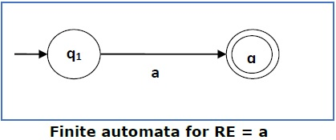
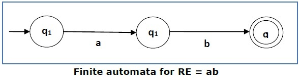
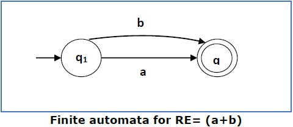
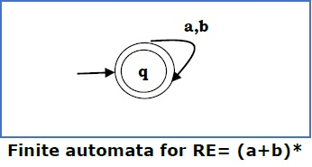
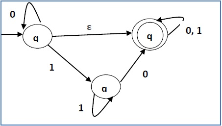
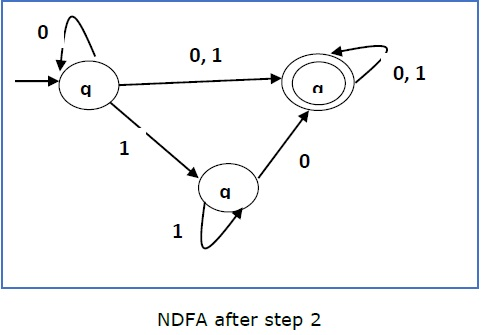
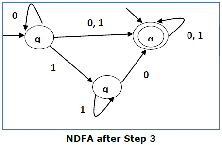
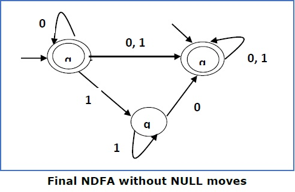

Regular Expression to NFA
A Regular Expression can be recursively defined as follows −
- If X is a Regular Expression denoting the language L(X) and Y is a Regular Expression denoting the language L(Y), then
- X + Y is a Regular Expression corresponding to the language L(X) ∪ L(Y) where L(X+Y) = L(X) ∪ L(Y).
- X . Y is a Regular Expression corresponding to the language L(X) . L(Y) where L(X.Y) = L(X) . L(Y)
- R* is a Regular Expression corresponding to the language L(R*) where L(R*) = (L(R))*
If we apply any of the rules several times from 1 to 5, they are Regular Expressions.
Some Re Examples
| Regular Expression | Regular Set |
|---|---|
| (0 + 10*) | L = {0, 1, 10, 100, 1000, 10000, ...} |
| (0*10*) | L = {1, 01, 10, 010, 0010, ...} |
| (0 + ε)(1 + ε) | L = {ε, 0, 1, 01} |
| (a+b)* | Set of strings of a's and b's of ant lenght including the null string. So L= {ε, a, b, aa, ab, bb, ba, aaa..... } |
| (a+b)*abb | Set of strings of a's and b's ending with the string abb. So L= {abb, aabb, babb, aaabb, ababb, ..... } |
| (11)* | Set consisting of even number of 1's including empty string, So L= {ε, 11, 1111, 111111, .......} |
| (aa)*(bb)*b | Set of strings consisting of even number of a's followed by odd number of b's , so L = {b, aab, aabbb, aabbbbb, aaaab, aaaabbb, .......} |
In NDFA, for a particular input symbol, the machine can move to any combination of the states in the machine. In other words, the exact state to which the machine moves cannot be determined. Hence, it is called Non-deterministic Automaton. As it has finite number of states, the machine is called Non-deterministic Finite Machine or Non-deterministic Finite Automaton.
Formal Definition of an NDFA
An NDFA can be represented by a 5-tuple (Q, ∑, δ, q0, F) where −
- Q is a finite set of states.
- ∑ is a finite set of symbols called the alphabets.
- δ is the transition function where δ: Q × ∑ → 2Q
- q0 is the initial state from where any input is processed (q0 ∈ Q).
- F is a set of final state/states of Q (F ⊆ Q).
(Here the power set of Q (2Q) has been taken because in case of NDFA, from a state, transition can occur to any combination of Q states)
Graphical Representation of an NDFA: (same as DFA)
An NDFA is represented by digraphs called state diagram.
- The vertices represent the states.
- The arcs labeled with an input alphabet show the transitions.
- The initial state is denoted by an empty single incoming arc.
- The final state is indicated by double circles.
Example
Let a non-deterministic finite automaton be →
- Q = {a, b, c}
- ∑ = {0, 1}
- q0 = {a}
- F = {c}
The transition function δ as shown below −
| Present State | Next State for Input 0 | Next State for Input 1 |
|---|---|---|
| a | a, b | b |
| b | c | a, c |
| c | b, c | c |
We can use Thompson's Construction to find out a Finite Automaton from a Regular Expression. We will reduce the regular expression into smallest regular expressions and converting these to NFA and finally to DFA.
Some basic RA expressions are the following −
Case 1 − For a regular expression ‘a’, we can construct the following FA −
Case 2 − For a regular expression ‘ab’, we can construct the following FA −
Case 3 − For a regular expression (a+b), we can construct the following FA −
Case 4 − For a regular expression (a+b)*, we can construct the following FA −
Method
Step 1 Construct an NFA with Null moves from the given regular expression.
Step 2 Remove Null transition from the NFA and convert it into its equivalent DFA.
Problem
Convert the following RA into its equivalent DFA − 1 (0 + 1)* 0
Solution
We will concatenate three expressions "1", "(0 + 1)*" and "0"

Now we will remove the ε transitions. After we remove the ε transitions from the NDFA, we get the following −

It is an NDFA corresponding to the RE − 1 (0 + 1)* 0. If you want to convert it into a DFA, simply apply the method of converting NDFA to DFA discussed in Chapter 1.
Finite Automata with Null Moves (NFA-ε)
A Finite Automaton with null moves (FA-ε) does transit not only after giving input from the alphabet set but also without any input symbol. This transition without input is called a null move.
An NFA-ε is represented formally by a 5-tuple (Q, ∑, δ, q0, F), consisting of
Q − a finite set of states
∑ − a finite set of input symbols
δ − a transition function δ : Q × (∑ ∪ {ε}) → 2Q
q0 − an initial state q0 ∈ Q
F − a set of final state/states of Q (F⊆Q).
The above (FA-ε) accepts a string set − {0, 1, 01}
Removal of Null Moves from Finite Automata
If in an NDFA, there is ϵ-move between vertex X to vertex Y, we can remove it using the following steps −
- Find all the outgoing edges from Y.
- Copy all these edges starting from X without changing the edge labels.
- If X is an initial state, make Y also an initial state.
- If Y is a final state, make X also a final state.
Problem
Convert the following NFA-ε to NFA without Null move.
Solution
Step 1 −
Here the ε transition is between q1 and q2, so let q1 is X and qf is Y.
Here the outgoing edges from qf is to qf for inputs 0 and 1.
Step 2 −
Now we will Copy all these edges from q1 without changing the edges from qf and get the following FA −
Step 3 −
Here q1 is an initial state, so we make qf also an initial state.
So the FA becomes −
Step 4 −
Here qf is a final state, so we make q1 also a final state.
So the FA becomes −
